|
I uppbudsprotokoll från 1696 förekommer omväxlande Skarbergsgatan och Skarenbergsgatan och i designationer från 1712 och 1713 såväl Skarborgsgatan som Skarbergsgatan. Även namnet Skvalbergsgränden /-gatan har
varit vanligt. Från och med 1740-talet tycks namn
bruket ha stadgat sig; i fortsättningen får gatan vanligtvis heta Skaraborgsgatan.
Arne Munthe, (Västra Södermalm intill mitten av 1800-talet, 1959) som utgår från namnformen i Holms
tomtbok 1679, skriver: "Namnet torde gå tillbaka på
handelsmannen Johan Schiarnberg, som 1679 hade
trädgårdar både i kvarteret Ormen större och
kvarteret Harhuvudet."
Den första förklaringen måste betraktas så
som osannolik. Man bör i stället utgå från den äldsta
namnformen och räkna med att förleden i namnet är
det västgötska Skaraborg. Gatan gick fram mellan kvarteren Göta Ark (1651) och Östergötland (1651); öster om
det senare låg kvarteret Västergötland, (1651). Namnen Skaraborgsgatan, Östergötland, Västergötland och Göta
Ark representerar en namnkategori, som av allt att döma har initierats av namnet Götgalan.
Ur Stockholms gatuskyltar berättar, Gustaf Fredrik Ek, 1933
Så kommer en liten gata - den går ej ned till Hornsgatan - som kallas Skaraborgsgatan. Man är naturligtvis
frestad att tro att dess namn uppkommit efter samma grunder som de närbelägna Östgöta-, Skåne-, Ölandsgatorna etc.
Skaraborgsgatan har emellertid sannolikt uppkommit ge-
nom en namnförvrängning. Gatans äldsta namn - på 1600-talet - var nämligen Scharenborgsgatan efter handlanden
Johan Scharenberg, som här ägde ett hus, för övrigt samme
man som ägde huset Kornhamnstorg 5, vilket än i dag
kallas Scharenbergska huset.
Repslagargatan före 1937
Ur Stockholms gatunamn, Nils-Gustaf Stahre, 1992
Repslagargatan (Reperegattun 1569, Reepslagare gatunn 1636) har fått sitt namn av den repslagarbana.
som sedan medeltiden har legat inom området. Den
omtalas 1430 ("widh repabanana"). År 1554 omnämns "repeslagare gården". Från omkring mitten av
1640-talet och fram till 1670 förekommer även Noe
Arksgränden/gatan såsom namn på gatan (Noe Arckz
grenden 1644, Noe Arcks gathun 1647).
Repslagargården avser ett parkområde mellan Repslagargalan och Skaraborgsgatan.
Ur Bih. nr 3 år 1940 19 FATBURSSJÖN.
Stockholms stad
|
Märkligast i detta avseende torde det kakelfynd vara, som 1938 anträffades i skärningen Repslagargatan - Högbergsgatan. Inom ett område av ett par kvadratmeters yta lågo här 11 hela och ett 30-tal sönderslagna skålformiga s. k. pottkakel av en form, som användes under 1400- och 1500-talet. Då de alla lågo bland förkolnade trärester och medeltida handslaget tegel, som troligen tillhört en brännugn, ar det troligt, att de härröra från en kruk- och kakelugnsmakareverkstad, som funnits på platsen under 1500-talet eller tidigare. Verkstaden har legat ett stycke väster om den stora allmänningsvägen i sluttningen ner mot Fatburen. På denna plats låg vid 1500-talets mitt den s. k. "Krukomakaregården".
I nära anslutning till den stora allmänningsvägen (Götgatan) låg även stadens repslagarbana på Södermalm. Den är nämnd första gången 1430. Under medeltiden och 1500-talet har den troligen haft sin plats på strandbrinken norr om Fatburen omedelbart nedanför det berg, på vilket nu Södra Latinläroverket ligger. Anledningen till placeringen förklaras av att repslagerier ha behov av att ligga intill vatten. I närheten av Fatburen har funnits minst två repslagarbanor under 1600-, 1700- och 1800-talen. Den ena - en stor inbyggd bana - låg åtminstone från och med slutet av 1600-talet intill det nedan nämnda stadsdiket söder om Fatburen.
Den andra bör ha legat öster om sjön ungefär i nuvarande Folkungagatans riktning. Det var en mindre, sannolikt öppen bana, från vilken rester anträffades vid schaktningar för Södergatans tillfartsvägar från Folkungagatan. Överhuvudtaget var Fatbursområdet i äldre tid framför allt befolkat av hantverkare och upptaget av deras verkstäder och verkstadsplatser. Flera påtagliga bevis härför ha kommit i dagen vid de undersökningar, som de sista årens schaktningar givit anledning till.
| |
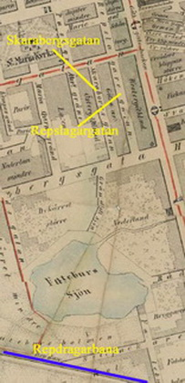
|
|
|
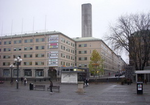
|
|
Kvarteret Göta Ark
Göta Arkhuset, är ett kontors- och bostadshus vid norra sidan av Medborgarplatsen på Södermalm i Stockholm, som uppfördes 1983 i kvarteret Göta Ark. Fasigheten utgörs av en kontorsbyggnad om ca 22 000 m² i fem till sju plan. Fasaderna består av tidstypiska betongelement. En skorsten för Söderledstunnelns ventilationsanläggning kommer upp genom byggnaden och mynnar 50 meter ovan omgivande mark.
|
|
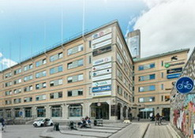
|
|
|
Före tillkomsten av Södergatans djupa och breda
dike sträckte sig det nu utplånade kvarteret Göta
Ark från Bangårdsgatan till S:t Paulsgatan.
Området innehöll en blandning av bostäder och hantverkslokaler. Hattmakare, snörmakare, korgbindare, bagare och karamellmakare är exempel på
yrkesutövare som höll till här. Göta Ark stod före
avhästningen till reds med övernattningsställen åt
lantmän som med ox- eller hästdragna vagnar kom
långväga ifrån med sina produkter för att sälja på
stans torg.
Kvarteret sjöd av idog hantverksnit före funktionalismens genombrott 1930. Efterfrågan på
dekorativa utsmyckningar inom arkitekturen slocknade
med den nya tidens betong- och glasorgier.
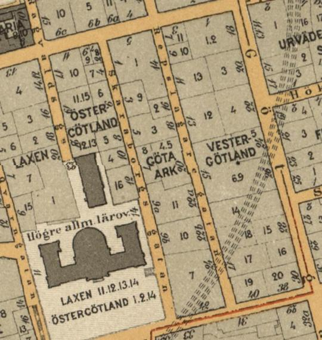
Det var tre stora Söderkvarter som nästan helt sopades bort då
Södergatan drogs fram. Det största av dessa var den långsmala Göta
Ark, som inrutades av Sankt Paulsgatan, Repslagaregatan, Högbergs-
gatan och Skaraborgsgatan och som omfattade ett tiotal egendomar
med bebyggelse huvudsakligen från 1700-talets senare hälft.
|
I den norra ändan av kvarteret med adressnummer Repslagaregatan 14 och Sankt Paulsgatan 5 låg den så kallade Frölichska malmgården, vars huvudbyggnad var ett stort trevåningshus med
vindsvåning under säteritak. Inkörsporten var pampig och det stora gårdsutrymmet, som var delat i en yttre. och en inre gårdsplan, kantades
av stallar, bodar och uthus och användes under större
|
|
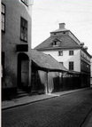
|
|
delen av 1800-talet och ett gott stycke in på 1900-talet som bondkvarter, speciellt
för bönder som skulle sälja sina varor på Kornhamnstorg, där det var förbjudet att ha hästarna stående.
|
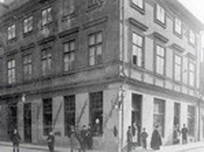
|
|
Detta är hörnet av Repslagargatan 14 och S:t Paulsgatan 5. Man får förmoda att det är S:t Paulsgatan som sträcker sig åt höger (västerut) och Repslagargatan åt vänster (söderut). Mannen med helskägget är Baggström, en av de sista gatuförsäljarna av tobaksvaror. På hörnet en viktualieaffär (livsmedel).
Något förvånande är att adressen är densamma som för Frölichska malmgården ovan (två olika källor)
|
Men det fanns mycket annat: i den rymliga "arken". Kvarterets
sydända mot Högbergsgatan upptogs helt av egendomen Repslagaregatan 24, som under större delen av 1800-talet och fram till
1909 rymde ett ansett Stockholmsföretag, det Haeggströmska boktryckeriet, vars namn bland annat var förknippat med vecko-
tidningen Ny Illustrerad Tidning under denna mycket
|
|
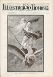
|
|
uppskattade publikations hela trettiofemåriga tillvaro.
Detta på sin tid Stockholms största boktryckeri och bokförlag, startades i liten skala 1813 av Zacharias Haeggström.
Sonen Ivar
Haeggström drev företaget vidare, men i modernare form. 1800-talets anläggning täckte en stor del
av kvarteret Göta Ark. Fröhlichska malmgården i kvarterets
norra del brukades till familjens privatbostad.
|
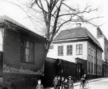
Repslagargatan 24 från Högbergsgatan norrut 1914, Praktiska yrkesskolan. Ovanför porten står "Boktryckeri"
|
|
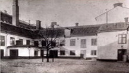
Repslagargatan 24 gården, 1914. Här hade stadens yrkesskolor sina första lokaler. Till vänster bakom husen skymtar Södra Latins byggnad.
|
I nummer 22 återfanns Beeken och Westerlunds cigarrfabrik i ett tvåvåningshus med vindskupor och i nummer 20 samma gata, som var en pittoresk samling hus av olika ålder och storlek, låg ett känt hovslageri. På 70-talet drevs "hovbeslagsrörelsen" av veterinär A. J. Ahlström, som också höll utfodringsstallar för godsägare och annat herrskapsfolk som gästade huvudstaden i eget ekipage. Det var alltså inte frågan om något vanligt bondkvarter. Rörelsen lades ner vid sekelskiftet.
|
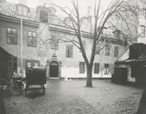
Beeken och Westerlunds cigarrfabrik, med personal på nästa bild.
|
|
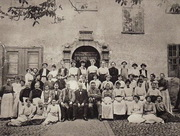
Portalen i bakgrunden är numera entré till biblioteket i Medborgar-
huset.
Bilden tagen 1913.
|
|
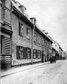
Repslagargatan 22A närmast till vänster.
Året är 1900.
|
|
|
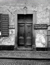
Porten 22A mot Repslagargatan
|
"Göta Ark" rymde, utom det hundratal anställda som arbetade där,
åtskilliga fasta invånare, säkert närmare trehundra, och många av
dessa levde i små omständigheter. Hemarbeten som täckstickning,
snörmakeri, rottingflätning var därför vanliga i kvarteret.
|
En del
av bostäderna var säkert dåliga, men de var väl dolda bakom kvarterets pittoreska yttre. Alla de brutna taken, de snidade inkörsportarna och planterade gårdsplanerna bildade en helhet, som vi inte
längre har någon motsvarighet till i Stockholm och den hade en romantisk charm, som man delvis kan ana då man betraktar den
modell av "Göta Ark" som finns i Stadsmuseet.
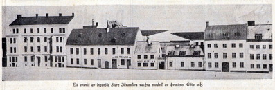
Ett avsnitt av ingenjör Sture Silvanders vackra modell av kvarteret Göta ark mot Repslagargatan
Ur Olle Rydbergs "Se på Söder"
Almgrens sidenväveri, Götgatan 32 (tidigare 28) och Repslagargatan 15
Götgatan 32 (tidigare 28) har drag av sent 1800-tals Östermalm.
Ingenting skvallrar om att huset är en bra bit över
200 år gammalt. Tillbyggt 1838, påbyggt en våning
1884 och senare fasadrenoverat, har det förlorat all
1700-talskaraktär. Byggnaden har uppmärksam-
mats av kulturhistoriskt intresserade därför att den
var hemvist åt sidenvävaren Knut August Almgren
och hans son Oscar. Den senare lät uppföra den
elegant svängda entretrappan, som belyses från
fönster med välvda bågar.
Knut August Almgren, född 1806, kom från
Västerås till Stockholm. Hos sidenfirman Mazer &
Comp skaffade han sig erforderlig branschkännedom, påbyggd med studier i Frankrike. Med den
bakgrunden kunde han starta eget, vilket skedde i
början av 1830-talet.
|
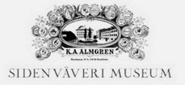
Öppet museum!
|
|
Almgrens sidenväveri hade på 1800-talet stora
framgångar som gjorde ägarna förmögna. Vid
seklets mitt arbetade 125 personer i väveriet.
|
Framgångarna berodde mycket på att K A Almgren
lyckades importera sinnrika jacquardvävstolar från
Frankrike. Därmed kunde han ta upp konkurrensen på sidenväveriets marknad med sydlänningarna.
I Repslagargatan 15 installerade Almgren 1862 sina vävstolar i en egen fabriksbyggnad,
vilken bildar västra gårdshuset till Götgatan 32.
På S:t Paulsgatan 13 hade fabriken en avdelning i
före detta Meyersonska sidenfabrikens lokaler. En
annan sektion av väveriet var inredd på Ragvaldsgatan 16. År 1880 hade firmans personal totalt vuxit
till 250 personer.
|
Ökad frihandel efter 1800-talets mitt gynnade
importörer, men skadade till en del svenska tillverkare, som inte klarade konkurrensen utifrån. Också
Almgrens fick känning av den hårdnande marknaden för svenska varor.
Efter K A Almgrens frånfälle 1884 fortsatte
sonen Oscar att leda det tidigare så framgångsrika
företaget.
1880-talet blev krisartat för sidenbranschen. Av
de fyra väverierna i Stockholm som stred om
marknaden återstod efter detta decennium blott
två. Det var Casparsson & Schmidt i Gamla Stan
och Almgrens på Söder. Efter sekelskiftet tog den
senare över konkurrentföretaget och blev därmed
ensam herre på täppan och i storlek Sveriges då
andra sidenväveri.
|
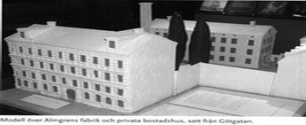
|
|
Från sidenväveriet på Götgatan spreds över landets butiker silkesschaletter, sidenband och liknande flärdfulla produkter.
|
Filialen på Lilla Nygatan
16 i Gamla Stan, Casparsson & Schmidt, fick leva
kvar med sitt namn och som kravattfabrik. Men
modet växlar och de tidigare eftersökta varorna
förlorade intresset hos köparna. Schalettillverkningen försvann redan under 1940-talet.
|
Sista tiden
vävde man nästan enbart ordensband. Statens
ordensutmärkelser avskaffades och ordensbristen
gav orderbrister, som
|
|
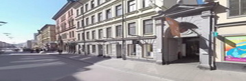
Almgrens hus på Götgatan, numera nummer 38
|
visade att tiden var ute för det
en gång så glänsande företaget.
Almgrens sidenfabrik satte punkt för branschens
existens i vårt land när firman lades ned 1974 efter
nära 150 års verksamhet.
Från den öppna entren till Repslagargatan 15
träder man in på gården till Götgatan 32 med
sidenfabriken till höger. Byggnaden omedelbart till
vänster innanför porten rymmer undervisningslokaler för Kursverksamheten vid Stockholms universitet.
Här låg fram till 1939 Anna Schuldheis'
skola för flickor, vars elever på rasterna med sina
ljusa röster gav liv åt den avskilda gården.
Det
gulputsade, originellt bredgavlade envåningshuset
på gårdens södra sida uppfördes till stall på gamle
sidenfabrikörens tid. Under Schuldheiska tiden på
1910- och 1920-talen användes det som gymnastiksal för eleverna.
Forts överst i högerspalten!
|
|
|
Det nu tysta och övergivna fabrikshuset uppfördes 1862-1863 och har fortfarande kvar en vävstolsutrustning från 1800-talet, vilken är av stort
industrihistoriskt värde.
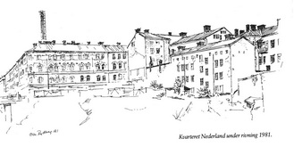
Den till Almgrens angränsande industribyggnaden på Repslagargatan 17 med fabriksskorstenen pekande upp ur
taket byggdes 1927 och inrymde tidigare Konsums
storbageri. Anläggningen flyttades senare till Västberga under namnet San Remo efter Evert Taubes
välkända bagarvisa.
|
Skaraborgsgatan, som löper från Sankt Paulsgatan till Högbergsgatan begränsades under Södergatans tid på sin östra sida av kvarteret Göta
ark och fanns endast kvar som en ramp över Södergatans sluttning.
Men slumpen har låtit några av de gamla husen vid gatan överleva
alla revolutioner och ett av dem är Skaraborgsgatan 12 snett
nedanför Södra Latins tegelmassa.
|
|
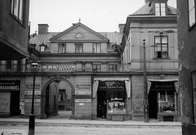
S:t Paulsgatan 6B, sett från Skaraborgsgatan
|
Det var barndomshem för en nu
sjuttiofyraårig stockholmare, kamrer Gunnar Malmberg, som lämnat
några uppgifter om denna trevliga Södergård. Nu återstår visserligen bara en mindre del av de sammanbyggda 1700-talshus som bildade egendomen, men herr Malmberg går fortfarande gärna dit för
att uppliva sina minnen.
Hyresgästerna i huset var mycket karakteristiska för en sådan gård.
I huvudbyggnaden, berättar herr Malmberg, bodde omkring 1880
ägaren själv, sjökapten G. W. Nisser, som disponerade en lägenhet
en trappa upp på sex rum och kök jämte en rymlig tambur, det senare mindre vanligt vid denna tid. Någon jungfrukammare fanns
dock inte, tjänarna låg då ännu i köken, som var ordentligt tilltagna
i måtten.
Nisser var ombudsman i Sjömanshuset och hade ett hushåll på sju familjemedlemmar och två tjänare och han åtnjöt stor
respekt bland de andra hyresgästerna, något som var vanligt då det
gällde "värden" i huset. Två trappor upp i samma länga bodde litteratören Albert Anderson-Edenberg, som gav ut Svenska Familje Journalen, en på 70- och 80-talen mycket populär illustrerad tidskrift, som verkligen gjorde skäl för namnet. Familjen Edenberg bestod av makarna och fem barn.
|
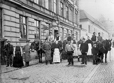
Personal vid Vattenfabriken Drufvan Skaraborgsgatan 9, snett mittemot nr 12, söderut
|
|
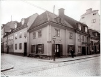
Hörnet Skaraborgsgatan 2 och S:t Paulsgatan 7 från nordost 1904
|
|
Av andra hyresgäster i Skaraborgsgatan 12 minns herr Malmberg familjen Tydén som bodde på nedra botten, där golvet tydligen låg någon fot
under marknivån, för man måste stiga ner ett trappsteg. Lägenheten
hyrdes egentligen av en äldre dam, mamsell Fredrika Lundin, som
hade Tydéns och en kryddkramhandlaränka Engblom som inneboende. Mamsell Lundin var visserligen bara dotter till en smidesmästare, men hon hade uppfostrats i pension och uttalade sitt förnamn
Fredrique. Det att mamsell Lundin var "litet fin" av sig tilltalade
inte de andra i huset som döpte henne till "Fille", möjligen en försvenskning av det franska fille - dotter.
Tydén var sjökapten och
oftast på resor, men fru Tydén uppfostrade de båda döttrarna, av
vilka den äldre hette Adamina, på ett utmärkt sätt.
Fasaden mot gatan i Skaraborgsgatan 12 bestod egentligen av tre
hus, fast de var sammanbyggda, och i det mellersta huset fann man
på nedra botten gårdens äldsta och största hyresgäst, pianofabrikören,
eller som han skrev sig, musikaliske instrumentmakaren Johan Olof
Söderström, vars tafflar hade mycket gott anseende under 60- och
70-talen. Då det mindre skrymmande pianinot gjorde sitt intåg i
hemmen vid 80-talets mitt, förlorade taffeln sin marknad, men förekom alltjämt i större hem till ett stycke in på detta sekel.
Taffeln ansågs som. en dekorativ möbel och var dessutom utmärkt att duka
smörgåsbord på vid gående supéer. Gästerna behövde nämligen inte
kröka ryggarna för att kunna välja bland mängden av assietter.
|
Söderström hade en trerumsvåning för sig och sin familj och i det
angränsande husets bottenvåning verkstaden, som hade fönster mot
gatan, men ingång från gården. Från Söderströms förmak fanns en
privat ingång till verkstaden, fabrikören deltog nämligen ivrigt i
|
|
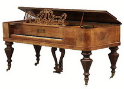
|
tillverkningen inte minst då det gällde avsyningen av instrumenten
och stämning. Fyra arbetare var sysselsatta i verkstaden.
|
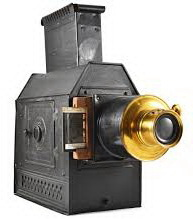
|
|
Söderström var typen för den jovialiske borgaren som arbetat sig
fram på duglighet och energi och till samma kategori hörde herr
Westerlund i våningen ovanpå, delägare i Beeken och Westerlunds
cigarrfabrik på andra sidan gatan.
Det var inget större umgänge
mellan de båda fabrikörsfamiljerna och inte mellan de andra hyresgästerna i huset heller, men en gång om året, vaniligen Tjugondag
Knut,
|
samlades alla gårdens barn till julgransplundring hos familjen
Westerlund, där det bjöds på skuggspel och laterna magica, uppskattade nöjen för barn som aldrig sett film.
Täppan som fortfarande finns bakom huset fast i mycket vandaliserat skick var avgränsad med plank och en syrenhäck och ingången
spärrades av två för det mesta låsta järngrindar. Den var nämligen
inte tillgänglig för hyresgästerna annat än på särskild inbjudan från
värden. Som barn föreställde sig Gunnar Malmberg att just så som
täppan i 12:an måste Edens lustgård ta sig ut.
|
För barnen fanns den
vanliga gården, där det lektes "boll stå" och "indianer och vita" och
där de beundrade de båda hästarna i stallet, som var uthyrt till vinhandelsfirman Dahlbeim och Engström i Södra Stadshuset. Blev gården för trång kunde ungdomarna i huset via soptunnans lock ta sig
upp på granntomten 14:s gräsklädda höjd, varifrån det var en vacker utsikt åt alla håll.
|
|
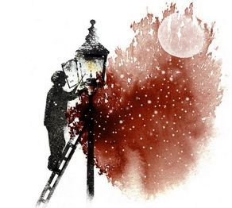
|
På höstkvällarna pågick leken till mörkret föll
och lykttändaren tände den fyrkantiga lyktan som satt på en utskjutande arm från husväggen. just vid sidan om 12:ans port.
Inifrån
rummen tedde sig lyktans ljuslåga som en lysande fjäril, som sakta
rörde på vingarna och som framkallade ett märkvärdigt och lockande
ljusspel i taket. Om man nu inte sköt för fönsterluckorna förstås.
Ännu på 80-talet var det vanligt med luckor för fönstren på nedra
botten. Stängningen måste utföras av två personer, den ena gick
utanför och sköt till luckorna och höll dem tryckta mot fönsterposten, medan den som var inomhus vred till skruvarna.
|
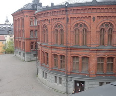
|
|
Livet i gården gick lugnt och regelbundet genom årstiderna, men
vid mitten av 80-talet började innevånarna oroas av ett rykte om
att alla husen däruppe på höjden skulle rivas och berget sprängas
bort för att ge plats åt en ny skola. Man kunde inte tro på så fantastiska historier, men en dag kom uppsägningarna. Och snart började
|
sprängningarna. Det var bara hyresgästerna i 12:an som fick
respit eftersom hela denna tomt inte genast behövdes för skolbygget.
Senare blev tydligen byggnadsplanen ändrad, för en del av huset
står som sagt kvar ännu efter sextiofem år.
Men täppan försvann däremot, fruktträden höggs ner och alltsammans begravdes av ett tjockt lager med sprängsten. Det var bittert för barnen i gården. Allrahelst som skövlingen skedde för en
skolas skull.
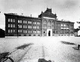
|
|
Södra latins stora nybygge på berget invigdes 1891 och rektorn Säd
kunde i sin resumé för första läsåret konstatera: "Skolan njuter förmånen av frisk luft direkt från landsbygden" och det var ju inte
att undra på eftersom, också enligt rektorn, "altanen ligger i nivå med Maria kyrkas tornspets, betydligt högre
|
än Katarinahissen, men
endast vid nedre delen av Katarina kyrkas kupol".
|
Själva skolhuset
står på en bergsklack, men gårdsplanen på södra sidan åstadkoms
genom utfyllning med den bortsprängda stenen från skolhusets källarvåning. Resultatet av detta arrangemang blev en anskrämligt hög
stenmur mot
|
|
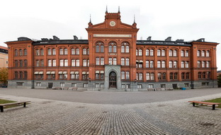
|
Högbergsgatan, lika hög som huset mittemot, där också
hyresgästerna blev mycket besvikna när den pittoreska utsikten över
kåkar och trädgårdstäppor byttes i en dyster stenmur. Även om
skolan har ett soligt och hälsosamt läge så är huset arkitektoniskt
sett ingen skönhet; bara detta att exakt samma byggnad kunde placeras som realläroverk vid Roslagsgatan på norr och som latinläroverk
på krönet av Söderbergen visar hur litet man vid den tiden tog hänsyn till de lokala förhållandena vid ett bygge.
Den skola som flyttade in i huset var inte ny, men inte heller
särskilt anrik om man undantar en beståndsdel i den, den gamla
Maria trivialskola eller Maria högre lärdomsskola, som den också
kallades. Den hade anor från 1600-talet och Anders Fryxell hade
varit rektor.
|
Södergatan/leden
|
Hörnet S:t Paulsgatan / Repslagargatan norrut
|
|
Som inledningsvis redan framhållits kom framdragandet av Södergatan, senare kallad Söderleden, att förorsaka stora förändringar i gatubilden från Hornsgatan i norr till Skanstull i söder. Störst var verkningarna i norr ned till Folkungagatan. Det var ju på den sträckan den äldsta och mest nedslitna bebyggelsen fanns.
I över hundra år, sedan 1866 års kommittéförslag ("Lindhagens plan") angav en breddning av Götgatan från 12 m till 24 m, har
möjligheterna att förbättra Södermalms nordsydliga huvudförbindelse varit föremål för utredningar och olika planförslag har redovisats.
|
|
I 1928 års generalplan redovisades gatugenombrottet vid Repslagargatan där den nya
gatan (Södergatan) fördes fram till Åsötorget
för att sedan via en trafikplats kopplas till
Götgatan och en bro över Hammarbyleden.
1937 började arbeten men vid utbrottet av andra världskriget 1939 var byggarbetena ännu inte slutförda men fortsatte i förminskad omfattning under kriget fram till 1945 då Södergatan öppnades. Man ville kalla Södergatan för den Södra Kungsgatan, men slutresultatet kom aldrig ens i närheten av den paradgata som Kungsgatan blev under 1920-talet.
|
|
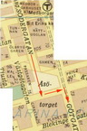
|
|
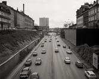
|
|
Då Namnberedningen 1937 föreslog namnet Södergatan motiverade man det med att den planerade gatan
skulle bli "Södermalms huvudtrafikled". Den nya gatan kom, som nämnts, att förorsaka betydande förändringar inom
det existerande gatunätet. Det ur namnsynpunkt mest
påfallande var, att två gamla gatunamn, Repslagargatan
och Skaraborgsgatan, på förslag av Namnberedningen
försvann 1949 genom att gatorna räknades in i Södergatan, trots att de bägge kom att ligga kvar på marken
i ett högre plan än Södergatan. År 1978 återupplivades
namnen.
Södergatan söderut. På bilden syns Repslagargatan högt över Södergatan på den vänstra sidan och till höger Skaraborgsgatan. Högbergsgatan leds på en bro över Södergatan längst bort i bilden.
|
I början av 1930-talet planerades Södergatan som en nord-sydgående huvudtrafikled som skulle avlasta Götgatan. Götgatan med sin smala backe i norra delen hade blivit helt otillräcklig att svälja all trafik som hade vuxit kraftigt på grund av de nya södra förorterna. Trafiken i "Götgatsbacken" hade fördubblats mellan 1925 och 1935.
|
Huvudalternativet för Södergatan var en sträckning parallellt med Götgatan, motsvarande en kvartersbredd mot väster. I norra delen skulle den bryta igenom höjdpartiet vid Hornsgatan och i en framtid ansluta till en bro över Söderström. Det diskuterades även en delsträckning i en 500 meter lång tunnel, "boende och arbetande skulle befrias från en stor genomgångstrafiks buller, damm och rök". Men tunnelalternativet segrade inte och 1936 beslöts att trafikleden skulle anläggas i ett öppet dike mellan Södra Bantorget (numera Medborgarplatsen) och området kring Brännkyrkagatan.
|
|
|
|
|
|
|
Tanken var även att den breda trafikleden skulle kantas åtminstone på östra sidan av kontorslängor Som framgår av en karta från 1940 var det meningen att koppla gatan i söder till Katarina bangata, vilket även skedde under kortare tid. När Skatteskrapan byggdes spärrades denna väg och istället fördes trafiken till Götgatan via Folkungagatan respektive Skånegatan. På 1950-talet revs ytterligare några hus i kvarteret Överkikaren och 1959 kunde Södergatan kopplas till det nyöppnade södra avsnittet av Centralbron.
På liknande sätt som Kungsgatan på Norrmalm under 1910-talet drogs fram i ett djupt dike genom Brunkebergsåsen, schaktades Södergatan fram i ett 10 meter djupt och 33 meter brett dike genom gamla kvarter och bebyggelse. Högbergsgatan, Sankt Paulsgatan och Hornsgatan fördes med broar över Södergatan.
Under många decennier var Södergatan ett hål i stadsbilden med sina osammanhängande slänter, stödmurar och stålspont. Diket kallades ibland skämtsamt för "Vättern", eftersom det ligger mellan kvarteren Östergötland och Västergötland. Först med invigningen av Söderleden respektive Söderledstunneln 1984 försvann diket och stadskvarteren på tunneln kunde återställas. Redan 1978 återupplivades gatunamnen Repslagargatan och Skaraborgsgatan, medan Södergatan som namn levde kvar till 1984.
Något som idag är svårt att föreställa sig är den ränna som Söderleden gick i och som fanns kvar sent in på åttiotalet. De som var barn på den tiden kommer ihåg den konstiga känslan när bilen åkte ur tunneln och man såg husen jättehögt upp på sidorna. Det var innan överdäckningen var färdig.
|
|
|
I planförslaget "Söder 67", som byggde på
1960 års trafikledsplan, redovisades Söderleden som en 8-fältig tunnel under Södermalm
ansluten till Nynäsvägen via en ny högbro
över Årstaviken väster om Skanstullsbron och
med stora trafikplatser såväl vid Ringvägen
som vid Folkungagatan. En sådan utbyggnad
av biltrafikkapaciteten mot innerstaden och
city stod dock i strid mot de trafikpolitiska
målsättningar för kommunen, som fastlades i
början av 1970-talet. Detta var den viktigaste
orsaken till att leden 1974 bantades till 4 körfält och fick till huvuduppgift att dränera bort
den genomfartstrafik som idag belastar Götgatan och Södermalms gatunät i övrigt.
|
|
|
|
Den 16 februari 1976 beslöt kommunfullmäktige i Stockholm efter lång debatt i stadsplanefrågan, att Söderleden skulle byggas ut
med ny högbro över Årstaviken och i tunnel
under Södermalm.
I och med detta beslut om trafikleden fogas
den sista länken till en nord-sydlig led genom
innerstaden mellan Tegelbacken och Johanneshov.
Motiv bakom beslutet
Sedan början av 1950-talet har stockholmstrafiken fördubblats. Trafiken på de två broarna
över Årstaviken vid Skanstull (Skanstullsbron
och Gamla Skansbron) uppgick vid oktoberräkningen 1976 till 90 000 fordon per dygn.
Huvuddelen av denna trafik passerar rakt genom Södermalm på sin väg mellan centrala
innerstaden och södra förorterna. Av Götgatans nuvarande 55 000 bilar per dygn är om-
kring 45 000 genomfartstrafik.
Dessa stora trafikmängder har gjort, att
Götgatan sedan länge är en av de mest störda
gatorna i Stockholm. De boende och verksamma längs gatan utsätts för buller och avgaser
på en oacceptabel störningsnivå. I den intensiva trafiken inträffar dessutom alltför många
olyckor.
Det är mot denna bakgrund, som man skall
se motivet för och behovet av Söderleden.
Den skall suga upp och avveckla den trafik,
som inte har anknytning till Södermalm. För
att kunna göra det måste trafikleden vara
attraktiv för bilisterna.
|
Nedfarten (Noe Arks gränd, tidigare Bangatan) till Söderleden från Götgatan mellan Lillienhoffska palatset och Götgatan 46.
|
|
Uppfarten från Söderleden på Folkungagatan bakom Medborgarplatsen. Även följande två bilder.
|
|
|
|
|
Sammanfattning
SÖDERLEDSTUNNELN ÄR en och en halv kilometer lång.
Leden var klar 1984, men bilar har långt tidigare kört på platsen,
förr låg Södergatan här, ett gigantiskt sexhundrafemtio meter
långt dike tvärs igenom norra delen av Södermalm. När man
grävde ut för Södergatan 1944, rev man många vackra gamla
1700-talshus och diket, som var ett väldigt fult sår i staden,
blev också starkt kritiserat. När den i sammanhanget lyckade
överdäckningen så småningom var klar, återskapades lite av den
fina söderkaraktären med nya bostadshus, just där de gamla
1700-talshusen tidigare legat.
På 1960-talet byggdes första delen av tunneln under Åsö gymnasium, men den delen användes aldrig, eftersom det inte fanns
några tillfartsvägar.
I början av 1980-talet drogs den delen som passerade Medborgarplatsen genom en tunnel och samtidigt började arbetet med att däcka över resten. Själva överdäckningen var klar
i januari 1991 och man kunde börja bygga husen ovanpå. Bara
etthundratio meter av tunneln går genom berget, resten är gjutet i betong.
Nuvarande tunnel är byggd som två separata tunnelrör med
två bilfiler i varje. Ett problem som man stod inför var hur man
kunde förhindra att husen ovanför den överdäckade tunneln
skulle skaka av trafiken. Lösningen blev en intressant gummiupphängning. De nya husen har blivit mycket uppskattade, de
är vackert pastellfärgade med små gröna gårdar och harmonierar
väl med de gamla husen på sidorna.
Avslutande bildkavalkad
|
Södergatan norrut mot bron över Högbergsgatan
|
|
Södergatan norrut mot bron över S.t Paulsgatan
|
|
Södergatan når Centralbron
|
|
Infart till Söderledstunneln från norr
|
|
Södergatan norrut från Medborgarplatsen. Bilden tagen från Skatteskrapan
|
|
|
|
{kind=link}
{kind=link}
{kind=link}
{kind=link}
{kind=link}
{kind=link}
{kind=link}
{kind=link}
{kind=link}
{kind=link}
{kind=link}
{kind=link}
{kind=link}
{kind=link}
{kind=link}
{kind=link}
{kind=link}
{kind=link}
{kind=link}
{kind=link}
{kind=link}
{kind=link}
{kind=link}
{kind=link}
{kind=link}
{kind=link}
{kind=link}
{kind=link}
{kind=link}
{kind=link}
{kind=link}
{kind=link}
{kind=link}
{kind=link}
{kind=link}
{kind=link}
{kind=link}
{kind=link}
{kind=link}
{kind=link}
{kind=link}
{kind=link}
{kind=link}
{kind=link}
{kind=link}
{kind=link}
{kind=link}
{kind=link}
{kind=link}
{kind=link}
{kind=link}
{kind=link}
{kind=link}
{kind=link}
{kind=link}
{kind=link}
{kind=link}
{kind=link}
{kind=link}
{kind=link}
{kind=link}
{kind=link}